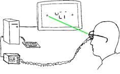
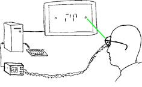
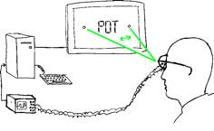
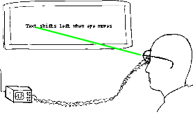
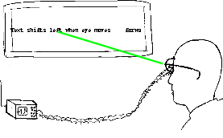
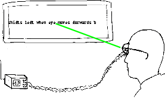

The Failed Fusion
Experiment was a watershed.
I was finishing a
year as post-doctoral student at the University of California at San Diego. I
had spent most of the year hesitating about what to do. Hesitating is a
pleasant thing to do at UCSD. While you hesitate, you can look over the cliffs
and see the California gray whales out at the horizon, on their yearly
migration to or from Baja California. You can try to learn how to surf. You can
go to lots of beach parties and feign a laid-back California style while you
secretly worry about your future.
Only towards the end
of my stay had I settled on an experiment. The purpose of the experiment was
not simply to measure the compensatory signal, but to test the basic hypothesis
underlying the whole notion of compensatory signal. This hypothesis is
essentially the idea that information from one eye fixation is fused together
with information from the next eye fixation, so as to form a coherent,
composite image. According to this hypothesis what we see at any moment is not
the actual retinal image, but rather the patched-together, composite image.
I hooked people up
to an eye-movement measuring device, and had them look at a computer screen. I
first had them look on the left of the screen, and had the computer display
some random lines in the middle of the screen.
I then asked people
to move their eyes to the right of the screen. At the moment their eyes moved,
the computer detected this movement, and immediately replaced what was in the middle
of the screen with some other random lines.
Except that I
arranged the two sets of random lines so that when they were superimposed, they
formed something recognizable, namely a word.
If we believe that
our impression of the visual world derives not from the individual retinal
images, but from the composite picture that is formed by patching together
information from successive fixations, using the compensatory shift signal to
determine the exact positions of each successive image, then we expect that in
this experiment people should have the impression of seeing the word, not the
random lines.
It was quite
difficult to program the computer to run the experiment, and to link the eye
movement tracker so that eye movements instantaneously determined what was on
the display screen. I had only managed to get everything working at the very
end of my postdoc in San Diego, just a few days before I was supposed to fly
back to Paris.
Just before I left
my host professor organized a beach party in Del Mar. As usual most of the
students in the research group were there, vying with one another to get the
attention and approbation of the professor[1],
and failing that, at least to assert themselves as good frisbee throwers or
sausage roasters.
In my experiments I
had managed to show that one could actually see the word, even though at each
individual eye fixation only incomprehensible random lines were present. There
was what I called trans-saccadic fusion. I remember drawing diagrams in the
sand to explain the result to the people at the party, and I was very excited
when the professor fleetingly seemed interested.
When I got back to
Paris I started all over with the equipment we had at my lab, trying to set up
the same experiment. With a colleague it took us another year, but we got the
apparatus working better than in San Diego, and we could have greater
confidence in the results.
The trouble was, the
results were negative[2].
There was no
trans-saccadic fusion. Information from successive eye fixations was not fused
together into a coherent whole.
It turned out that
the reason I had got a positive result in San Diego was that I had made a
mistake: the persistence of the phosphor on the display screen I had used was
too long, and the random lines from before the eye movement left a slight
visible trace on the screen which combined with the random lines from after the
eye movement. In my San Diego experiment, trans-saccadic fusion had taken place
on the screen instead of in the brain of the viewer!
The Paris finding
that there was no trans-saccadic fusion was shocking to my way of thinking
about vision. How can people see the world as stable, if successive images are
not combined into a stable, composite framework?
We did all kinds of
control experiments to check whether maybe fusion would occur more easily if
there were common elements visible in the visual field before and after the
saccade and that could serve as stable reference frames to help patch together
successive images. But we had to finally conclude that there was nothing that
could be done to save the hypothesis of trans-saccadic fusion. We went back to
the drawing board to see if we could understand how the world seems stable
despite eye movements.
And then a paper
appeared in the prestigious journal Science, doing essentially exactly the same experiment
as we had, and claiming that there was trans-saccadic fusion after all[3].
I was very upset. I wrote to the authors suggesting that their result might be
due to phosphor persistence. Almost two years later the authors published
another paper in Science,
retracting their previous result and confirming that it had indeed been due to
phosphor persistence[4].



The Failed Fusion
Experiment. From top to bottom: the observer looks at the left dot, and random
lines appear in the middle of the screen. Then the observer looks at the right
dot, and other random lines appear. The two sets of random lines, when
superimposed, would correspond to a word (as shown in the bottom diagram), but
this never appears on the screen. If there is trans-saccadic fusion in the
brain however, the observer should see the word. The results of the experiment
are negative: there appears to be no trans-saccadic fusion.
Around the time of
the failed fusion experiment a number of other, related experiments were also
being performed which further undermined the idea that snapshots of visual
information could be combined across eye saccades.
One amusing
experiment was the moving text experiment[5].
In this I hooked up observers to my eye movement measuring device and had them
read texts on the screen. Unbeknownst to the observers I arranged things so
that every time they made an eye movement forward in the text, the computer
shifted the text leftwards by one third of the size of the person's eye
movement. This meant that when the person's eyes tried to make, say, a
nine-letter eye movement, their eyes actually ended up at a position that was
twelve letters forward.
I printed out a
little prospectus saying "Science Needs You: PhD student needs volunteers
for amusing experiment in psycholinguistics", and I wandered around Paris
handing it out to sympathetic-looking people, hoping that they would
enthusiastically come and devote some time to Science.
Unfortunately nobody
came. I finally realized I had overestimated sympathetic-looking people's
interest in furthering the cause of Science. I changed my leaflet from saying
"Science Needs You" to: "Earn 10 Francs". Immediately I got
a constant flow of sympathetic-looking but penniless students.
And what happened
was rather interesting. The observers would read through the texts, not
noticing at all that the text was moving. At the end of the experiment I would
ask them whether they had detected anything odd. Most of the time they would
say no, and just complain about the fact that it was difficult to avoid
drooling on the bite-bar that they had to sink their teeth into so that their
heads would remain steady enough for the eye movement equipment to work
properly.
But every now and
then people would say something like: "it's funny, I seem to be reading
much faster than usual."
The fact that
reading is not disturbed by changing where the eyes land in a text as the
reader reads suggests again that information from the outside world seems not
to be being patched together into some kind of composite image based on
information gathered from successive eye movements.



The conclusion was
also confirmed by another, similar, experiment. In this, the text people read
was displayed in AlTeRnAtInG CaSe. At every eye movement the case of each
letter switched. The experimenter looking over the shoulder of the person
reading would see the text switching several times a second as the person read.
But, again, the person who was reading would not see the wriggling text: he
would see nothing wrong at all. Only if asked to concentrate on a particular
letter in a word, and then to move their eyes just a little bit away, would
they notice that now the letter they had previously been looking at had changed
case.
In addition to
myself, two other people in the world were working on experiments like this:
George McConkie at the University of Illinois, and his ex-student Keith Rayner,
at that time at the University of Massachussetts, who gradually became one of
the most cited workers on eye movements in reading. Like mine, the work they
did involved using displays that changed as a function of where the eye moved.
The purpose was to try to figure out exactly what information was carried over
from one eye movement to the next.
I remember George
McConkie excitedly telling me about the case-change experiment he was doing
with student David Zola. He said that when he had finished preparing the
computer program for the experiment, he had at first thought it was not
working. He had put himself into the eye movement measuring equipment and tried
without success to see the changing letters. Finally, only when he looked over
the shoulder of someone else as they read, could he confirm that things were
working correctly.
--
Today it is fairly well accepted that under normal
conditions, there is no trans-saccadic fusion[6].
The brain does not build up a composite picture from the successive snapshots
provided by each eye fixation. Contrary to what McConkie and most people
thought at the time, the explanation for people's inability to see changes in
pictures does not lie in some kind of malfunctioning of the mechanism that
integrates information across eye movements. It turns out that the phenomenon
is not only much more general, but fundamental to our understanding of visual
consciousness.
[1] Don Norman. Dave Rumelhart was also an impressive figure there at the time.
[2] O'Regan & LŽvy-Schoen (1983)[O'Regan, 1983
#1764]
[3] Jonides, J., Irwin, D., & Yantis, S.
(1982). Integrating visual information from successive fixations. Science,
215(4529), 192-194. doi: 10.1126/science.7053571.
[4] Jonides, J., Irwin, D., & Yantis, S.
(1983). Failure to integrate information from successive fixations. Science,
222(4620), 188-188. doi: 10.1126/science.6623072. In your
scientific career it seems that it’s sometimes better to be wrong than to be
right. When you’re wrong, you get lots of publicity from people criticizing you,
and you can later publish articles in Science retracting
your earlier work.
[5] Actually these experiments were done during the first years of my PhD in Paris, in about 1973-4, before the failed fusion experiment, which I did in San Diego and then on coming back to Paris in about 1976-8..
[6] There do remain one or two curious results
suggesting that some kind of information about position of objects may be
retained across eye saccades, but they are in the minority.